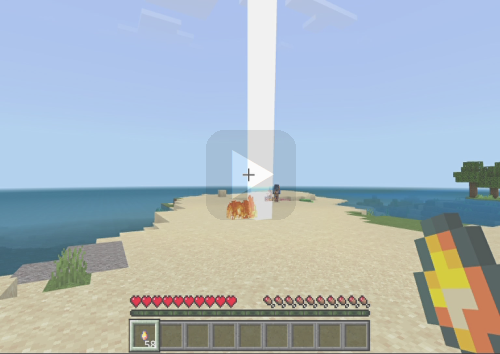
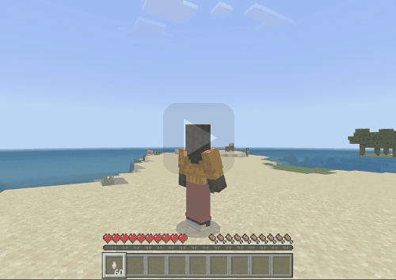
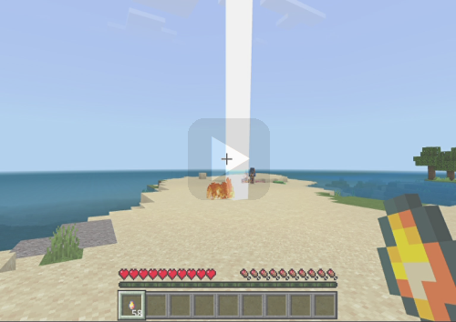
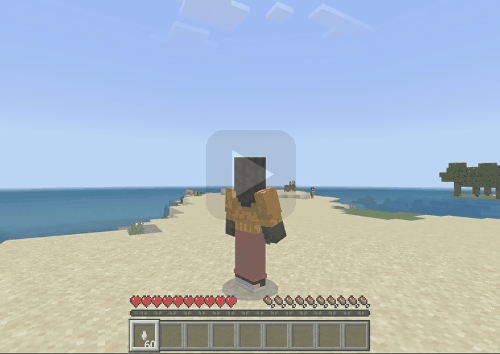
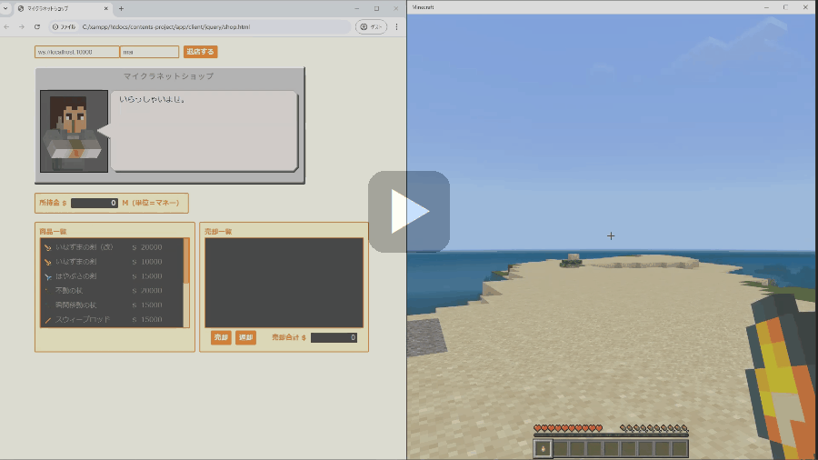
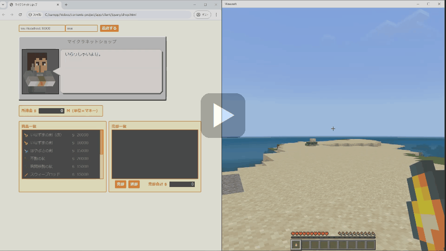
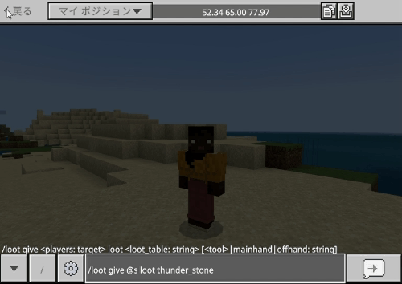
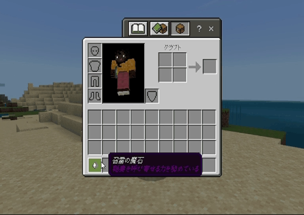
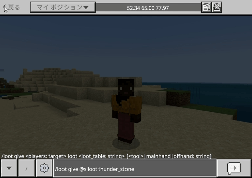
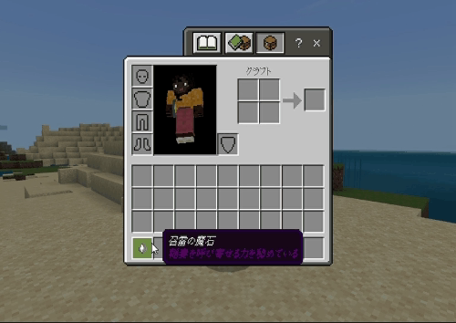

【召雷の魔石】
はじめに
このアイテムを手に持って投げる事により、投げたところへ稲妻を落とせます。
▼一人称

▼三人称

今回は投擲アイテムを作ってみたかったという事もありますが、他にも以下２つの目的で実装しました。
▼一人称

▼三人称

今回は投擲アイテムを作ってみたかったという事もありますが、他にも以下２つの目的で実装しました。
- ・いなずまの剣（改）のレシピ作成
- ・エンティティプロパティの検証
いなずまの剣（改）のレシピ
元々いなずまの剣（改）のレシピを作りたいと思っていたので、後付け感はありますが作ってみました。
「召雷の魔石」と「いなずまの矢」を消費するパターンの以下２種類共に無形レシピなので、必要な素材アイテムさえあれば作業台上の配置の仕方は問いません。
※無形レシピの作り方については▶レシピの作り方のページをご覧ください。
「召雷の魔石」と「いなずまの矢」を消費するパターンの以下２種類共に無形レシピなので、必要な素材アイテムさえあれば作業台上の配置の仕方は問いません。
※無形レシピの作り方については▶レシピの作り方のページをご覧ください。
いなずまの剣
- ・「召雷の魔石」を消費する場合
-
▼必要な素材

▼レシピパターン

- ・「いなずまの矢」を消費する場合
-
▼必要な素材
▼レシピパターン

いなずまの剣改
- ・「召雷の魔石」を消費する場合
-
▼必要な素材
▼レシピパターン

- ・「いなずまの矢」を消費する場合
-
▼必要な素材
▼レシピパターン
エンティティプロパティの検証
今回のアイテムは▶ネットショップのページでご紹介させて頂いたショップで売却できるようにするために、ショップとの接続中に右クリックの機能を無効化できるかどうかが課題でした。
色々と理由はありますが、屋内や施設内でショップに接続するケースも考えられるため、アイテムの使用によって周囲の設備が破壊される事を防ぐのが一番の目的です。
「いなずまの剣」や「はやぶさの剣」などの実装では座標を計算する必要があり、イベント処理の実装はWebsocketサーバー側で行っていた関係もあって対応は容易でした。
ところが今回は召雷部分も含めてアイテム投擲後のイベント処理の実装はクライアント（マインクラフト）側で行っています。
そこでショップとの接続を行っている直接のエンティティはプレイヤーになるので、サーバー（ショップ）側と連携させる目的で接続ステータスを表すフラグをプレイヤー側のエンティティプロパティで持たせる事にしました。
フラグメントを制御する処理の流れは次の通り。
以下はショップで売却するイメージです。
（ご覧の通り、ショップとの接続中は投擲物の発射や召雷の挙動は発生していません）

色々と理由はありますが、屋内や施設内でショップに接続するケースも考えられるため、アイテムの使用によって周囲の設備が破壊される事を防ぐのが一番の目的です。
「いなずまの剣」や「はやぶさの剣」などの実装では座標を計算する必要があり、イベント処理の実装はWebsocketサーバー側で行っていた関係もあって対応は容易でした。
ところが今回は召雷部分も含めてアイテム投擲後のイベント処理の実装はクライアント（マインクラフト）側で行っています。
そこでショップとの接続を行っている直接のエンティティはプレイヤーになるので、サーバー（ショップ）側と連携させる目的で接続ステータスを表すフラグをプレイヤー側のエンティティプロパティで持たせる事にしました。
フラグメントを制御する処理の流れは次の通り。
- ①Websocketサーバーとの接続時にフラグを落とす
-
サーバー接続時にフラグを落とす
eventコマンドを発行。
ショップとの接続中にマインクラフト側が強制終了された時の対応です。 - ②ショップへの入店時にフラグを立てる
-
ショップ接続時にフラグを立てる
eventコマンドを発行。 - ③ショップからの退店時にフラグを落とす
-
ショップ切断時にフラグを落とす
eventコマンドを発行。
以下はショップで売却するイメージです。
（ご覧の通り、ショップとの接続中は投擲物の発射や召雷の挙動は発生していません）

「召雷の魔石」の取得
本環境のビヘイビアパック／リソースパックを含めたアドオンパックを適用しておけば、以下の方法で「召雷の魔石」が手に入ります。


釣りで取得
宝物アイテムとして登録しているので「宝釣り」エンチャントで釣れやすくなります。ドロップアイテムとして取得
クリーパーのドロップアイテムとして登録していますが火薬を落とす確率よりも低く設定しています。コマンドで取得
以下はワールドオーナーやシステム組み込み用としてコマンドで取得する方法です。

おわりに
今回のアイテムの実装は▶投擲アイテムの作り方を基に応用したものです。
エンティティプロパティの使い方については▶エンティティプロパティのページをご覧ください。
また、今回の実装で発射物としてカスタムエンティティも作成していますが、詳しい作り方については▶発射体エンティティのページをご覧ください。
エンティティプロパティの使い方については▶エンティティプロパティのページをご覧ください。
また、今回の実装で発射物としてカスタムエンティティも作成していますが、詳しい作り方については▶発射体エンティティのページをご覧ください。